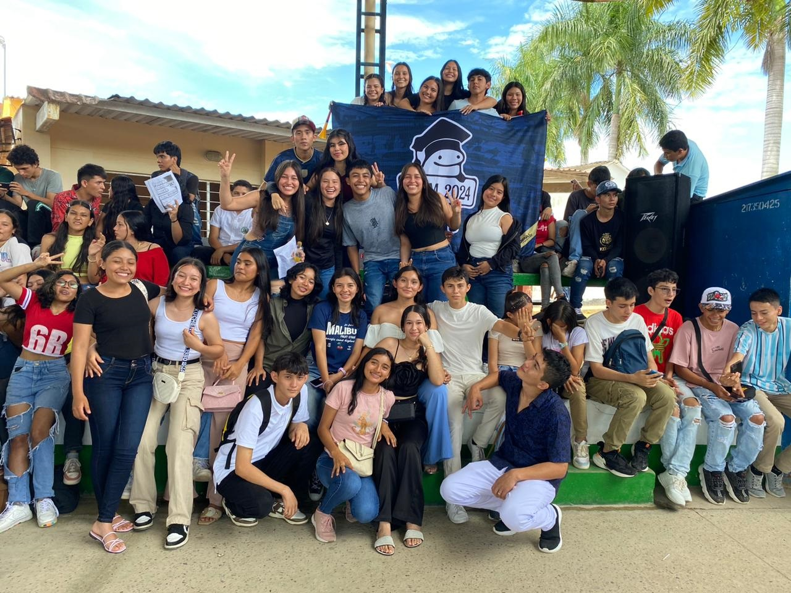
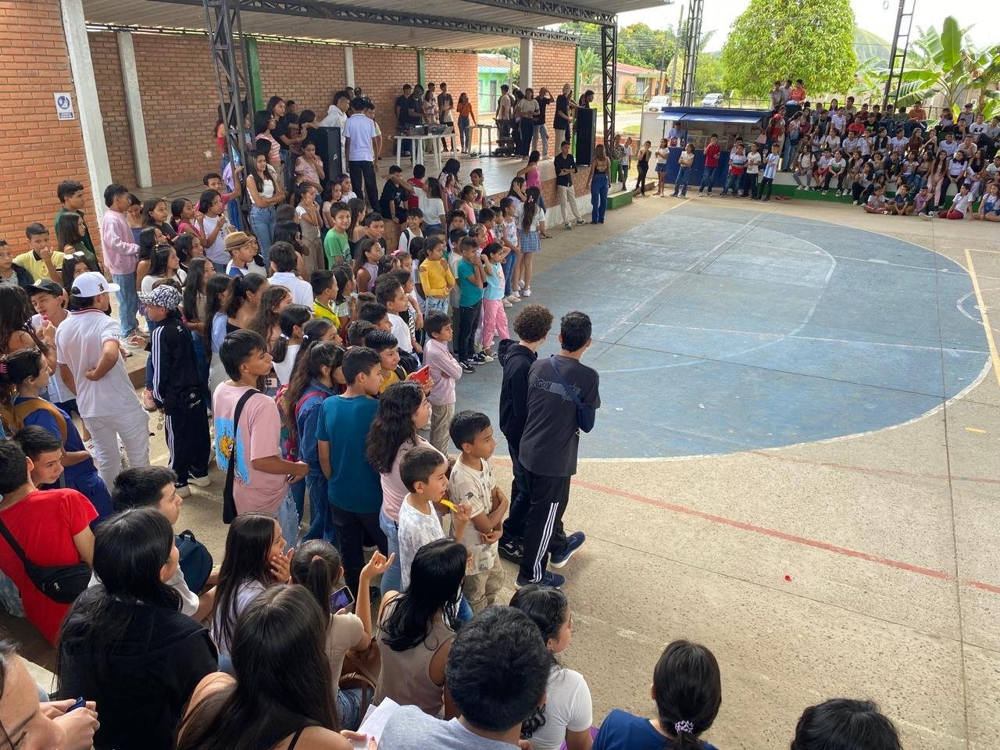
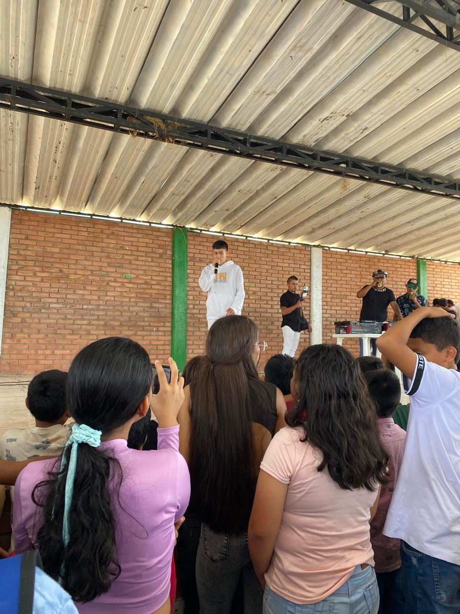

El Día del Estudiante es una fecha especial que celebra la dedicación, el esfuerzo y la energía de quienes son el alma de las instituciones educativas los estudiantes de este año 2024, en nuestra institución, se organizó una jornada llena de actividades para homenajear a todos los alumnos, promoviendo la convivencia y la alegría de una experiencia compartida. La jornada comenzó con una prueba de inglés, un reto que buscaba no solo evaluar los conocimientos de los estudiantes, sino también incentivar el aprendizaje de un idioma tan importante en el mundo globalizado de hoy.
Día del estudiante


Tras la prueba, cada grado se dirigió con su director de grado a un espacio destinado para un compartir. Este momento fue una oportunidad para relajarse, disfrutar de un refrigerio y fortalecer los lazos entre compañeros y docentes. Una vez terminado el compartir, todos los grados se dirigieron al polideportivo, donde se dio inicio al cronograma de actividades con un desfile. Cada grado presentó a tres parejas, que desfilaron con orgullo y elegancia, mostrando su estilo y creatividad. El desfile fue un espectáculo lleno de autenticidad y energía, que capturó la atención y el entusiasmo de todos los estudiantes y profesores. Posteriormente, la jornada continuó con una animada fiesta amenizada por un DJ. La música llenó el ambiente, invitando a todos a bailar y disfrutar. La regla del evento era clara: no estaba permitido quedarse sentado. Aquellos que intentaran evitar el baile debían pagar una multa, lo que incentivó a todos a participar activamente y mantener la energía en alto. Esta divertida norma creó un ambiente de participación total, donde nadie se quedó fuera de la pista de baile.

SIGUIENTE
Durante la fiesta, se hicieron varios anuncios importantes. Se destacó que habría premios para la mejor pareja de baile y para el grupo que más participara en la pista de baile. Estos premios fueron una motivación adicional para que todos se involucraran y dieran lo mejor de sí mismos en cada ritmo y movimiento. La competencia amistosa fomentó un espíritu de sana competencia y alegría, haciendo que la celebración fuera aún más emocionante. La jornada concluyó con la entrega de premios , donde se reconoció a los ganadores por su esfuerzo y entusiasmo. La mejor pareja de baile recibieron aplausos y elogios de todos los estudiantes, cerrando con broche de oro un día lleno de actividades y diversión.